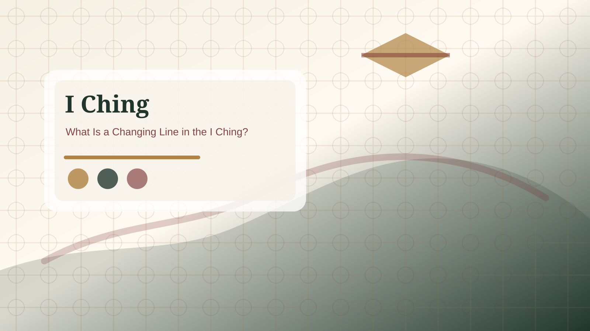

Changing lines
Changing linesChanging Lines Guide
Changing lines show where movement appears inside an I Ching reading. They are the active parts of the answer, not random decoration.
What changing lines mean
A hexagram can contain stable lines and changing lines. Stable lines describe the underlying pattern. Changing lines show where the situation is under pressure, in transition, or asking for adjustment. If the primary hexagram is the current field, the changing lines are the places where that field is moving.
This is why changing lines often feel more specific than the hexagram name. They can point to an early mistake, a central decision, a late warning, a need for restraint, or a moment where support matters. They should be read carefully and connected back to the original question.

How to read multiple changing lines
When more than one line changes, do not pull them apart as unrelated answers. Read them as a sequence. Lower lines often describe earlier or more foundational conditions. Middle lines often describe active participation, decision pressure, or relationship with others. Upper lines often describe excess, completion, warning, or what happens when the situation has gone too far.
If there are many changing lines, focus on the pattern they create. Ask whether the reading is showing too much movement, instability, or transition. A reading with several changing lines may be telling you that the situation is not settled enough for a single rigid answer.
Connection to the relating hexagram
The relating hexagram is formed when changing lines transform. This means changing lines are the bridge between the current pattern and the possible direction. The relating hexagram should not be read as a separate prediction. It shows what the situation may move toward if the active pressure is handled well.
Practical use
After identifying changing lines, turn them into a real-world check. What part of the situation is actually moving? Who or what is creating pressure? Is the change asking for action, patience, repair, restraint, or a clearer conversation? A useful reading should lead to one grounded adjustment rather than abstract speculation.
Changing line depth
A deeper reading depends on disciplined note taking. Record the original question, the date, the primary hexagram, the changing lines, and the relating hexagram before drawing conclusions. This keeps the reading anchored. Without notes, it is easy to remember only the phrase that feels dramatic and ignore the part that asks for patience, repair, restraint, or verification.
The next step is to translate symbolic language into ordinary behavior. If the reading points to waiting, define what preparation looks like during the waiting period. If it points to conflict, decide what evidence, boundary, or calmer conversation is needed. If it points to return, identify the exact place where direction became unclear. If it points to progress, ask what structure will keep progress sustainable.
Beginners should also notice their emotional reaction. Sometimes the reading feels vague because the question is vague. Sometimes it feels uncomfortable because it names a responsibility the reader hoped to avoid. In both cases, the answer is not to keep casting until the result feels better. The better response is to rewrite the question, study the result, and choose one small testable action.
For serious matters, use the I Ching as one reflective layer only. A reading can help with attention, timing, and self-observation, but it should not replace qualified advice, safety planning, financial review, legal judgment, or direct communication with people involved. The strongest use of the I Ching is not blind belief; it is clearer responsibility.
Worked example method
A simple way to practice is to make a three-column note after every reading. In the first column, write the exact question. In the second column, write the primary hexagram and its plain theme. In the third column, write one action that would make sense if the reading were accurate. This exercise prevents the result from staying abstract.
Then review the note after several days. Did the reading help you slow down, clarify facts, improve timing, or avoid an unnecessary reaction? If yes, the reading was useful even if it did not predict a specific event. If no, examine whether the question was too broad or whether you tried to use the result to escape a decision you already needed to make.
Over time, this method teaches the reader how patterns repeat. Some people often receive hexagrams about waiting because they push too quickly. Others receive conflict, limitation, return, or repair because the same life pattern keeps appearing. The value is not in memorizing every line at once; it is in building careful observation.
Reading review checklist
Before closing the page, check four items: the exact question, the primary hexagram theme, the active changing-line issue, and the one practical next step. If any item is missing, the interpretation is probably not ready. This checklist is simple, but it prevents most beginner mistakes because it keeps the reading tied to one question and one action.
The review should also include a boundary statement. Ask what the reading cannot know. It cannot know private facts you did not provide, guarantee another person?s future behavior, replace professional judgment, or remove uncertainty from a complex choice. Naming this boundary makes the reading more useful, not less useful, because it keeps symbolic interpretation in the right place.